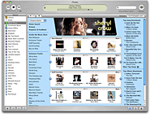
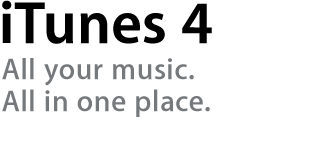

iTunes Music Store · Podcasts
Store · Podcasts · Browse · Library · Rights / FairPlay
June 28, 2005 — iTunes 4.9 takes podcasting mainstream (Apple Newsroom).
Discover, subscribe, manage, and listen inside iTunes; free Podcast Directory with
3,000+ free shows (ABC News · Adam Curry · BBC · Disney · Engadget · ESPN · NPR stations…).
Steve Jobs: “Podcasting is the next generation of radio.”
June 30, 2005: Apple announces more than one million Podcast subscriptions in the first two days
after 4.9. Subscribe buttons below save to this browser only
(
itt05-pod-subs) — no real audio files or payments.
Podcast directory (Jun 28, 2005 · iTunes 4.9)
Free podcasts — auto-download / Auto-Sync to iPod lore · no subscription fee for directory listings.
Stored as itt05-pod-subs in this browser.
Still also the Music Store: songs for just 99 cents (own-download with FairPlay DRM — not unlimited streaming). Store since Apr 2003; Windows path since Oct 2003.
Rock Hip-Hop Pop Jazz Soundtrack Classical
Your library (local)
Also publish / listen this year
No real audio files or payments. ← 2005 Start